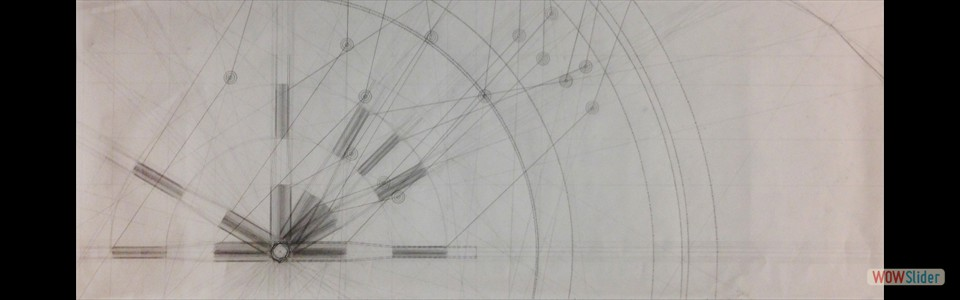

Principle subject for movement, physicality, and design for Project 1 Final Model
Principle subject for movement, physicality, and design for Project 1 Final Model- Secondary subject for Project 1 Final Model

 To study the tool's physicality
To study the tool's physicality- To measure the tool's movement and capacity


 Based on Initial Motion Crank Drawing
Based on Initial Motion Crank Drawing Based on Initial Motion Crank Drawing
Based on Initial Motion Crank Drawing Based on Initial Section Drawing 1
Based on Initial Section Drawing 1 Based on Initial Section Drawing 2
Based on Initial Section Drawing 2

- Provided by partner Michael Longo


 Based on previous drawing
Based on previous drawing


 1
1 2
2 3
3 4
4 8
8 9
9 10
10 11
11 14
14 15
15 16
16 17
17 19
19 21
21 23
23 25
25 28
28bootstrap slider by WOWSlider.com v8.7